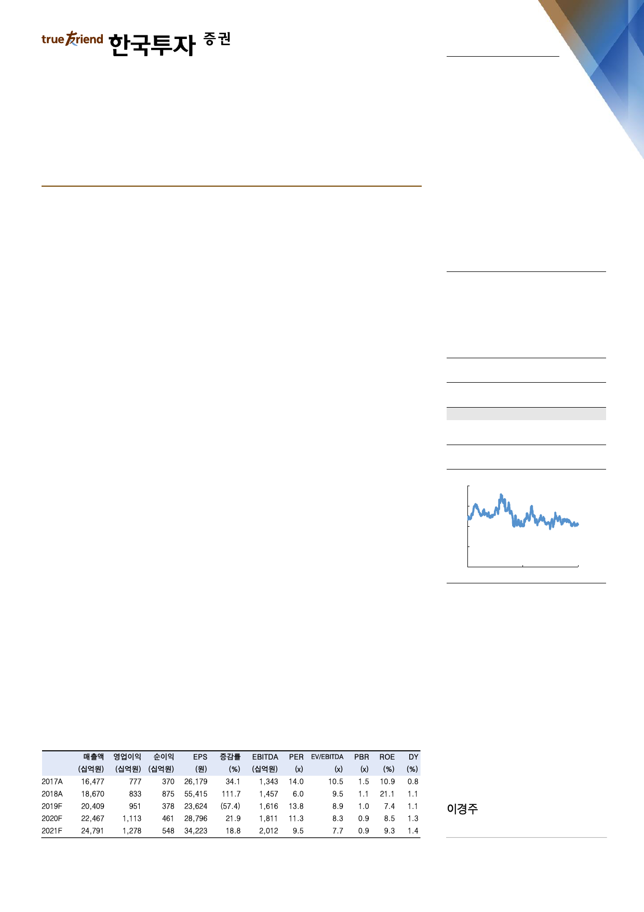

기업 Note
2019. 4. 16
CJ제일제당(097950)
생물자원 분할, 사업 집중력 강화 의지
매수(유지)
목표주가: 410,000원(유지)
국내 생물자원부문 물적 분할 결정
15일 이사회를 열고 동사는 국내 생물자원부문의 물적 분할을 결정했다. 5월 31
일에 열릴 주주총회에서 이 안이 통과되면 7월 1일자로 CJ제일제당이 100% 지
분을 보유한 씨제이생물자원(가칭)이 출범될 예정이다. 2018년 기준 국내 생물자
원의 매출액은 5,931억원으로 전체 생물자원 부문의 27% 비중이며, 영업이익률
은 1~2%, 영업이익은 100억원 수준으로 추측된다. 국내 생물자원은 축산 46%,
사료 54%로 사업이 구성되어 있다. 회사가 밝힌 분할 목적은 사업 전문성 강화
등이다.
해외 포함 생물자원부문 매출액 2.2조, 영업이익률 2.5%
이번 결정이 주총을 통과하면 국내외 생물자원은 모두 별도법인으로 자회사화된다.
Global Holdings(CJ제일제당 지분율 100%)라는 지주사로 묶여 있는 해외 생물
자원은 국내보다 규모가 더 크다. 2018년 기준 매출액은 1조 5,801억원, 영업이
익률은 2~3% 수준, 영업이익은 400억원대로 추정된다. 인도네시아, 베트남, 중국
의 비중이 각각 48%, 30%, 15%이며, 각 지역에서 축산업이 사료업보다 비중이
큰 구조이다. 국내외 생물자원의 합산 매출액은 최근 5년간 연평균 7% 증가했으
나 영업이익률은 2%대에 불과하다. 그동안 생물자원의 성장은 주로 해외가 주도
했는데, 특히 인도네시아와 베트남의 축산 및 사료 판매 증가가 주효했다. 높은 시
장 성장성 대비 경쟁 심화 및 1차 산업의 특성상 원재료와 제품가격의 등락이 심
해 수익성은 낮은 구조다.
Stock Data
KOSPI(4/15)
주가(4/15)
시가총액(십억원)
발행주식수(백만)
52주 최고/최저가(원)
일평균거래대금(6개월, 백만원)
유동주식비율/외국인지분율(%)
주요주주(%) CJ 외 8 인
국민연금
2,243
325,500
4,900
15
381,500/312,000
11,766
51.9/21.3
45.5
12.6
주가상승률
절대주가(%)
KOSPI 대비(%p)
1개월
(1.1)
(4.1)
6개월
1.1
(3.5)
12개월
(0.2)
8.5
주가추이
(천원)
440
380
320
260
200
Apr-17
자료: FnGuide
Apr-18
Apr-19
경쟁 우위 분야 투자 집중 그림
이번 분할 결정에서 사업 경쟁력 강화, 그리고 경쟁력 우위부문으로의 경영 집중
의 의지가 읽힌다. 국내 생물자원은 분할 시 차입금 471억원, 부채비율 42%의 양
호한 재무구조에서 출발할 예정이다. 사업 집중력 강화로 수익성이 소폭이라도 개
선되면 안정적으로 사업을 꾸려갈 수 있을 것이다. 또한 조회공시를 유발했던 풍
문과 같이 국내외 생물자원부문의 매각된다면, 이는 재무구조 개선에 일조할 전망
이다. 이것은 경쟁력이 가장 강한 분야로 회사의 역량을 집중하고자 하는 노력일
주: 순이익, EPS 등은 지배주주지분 기준
kjlee@truefriend.com